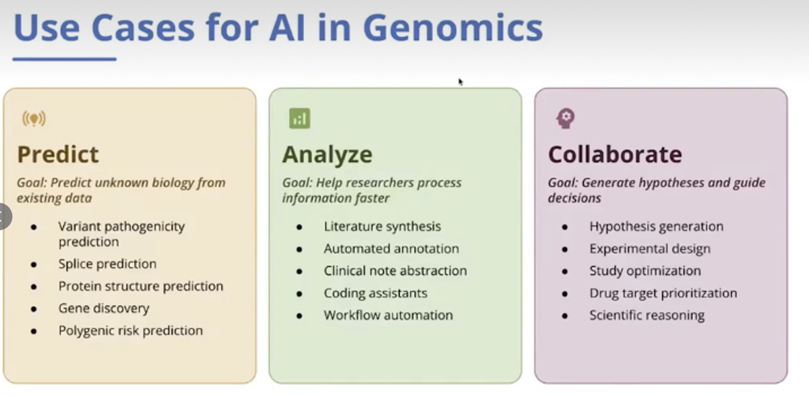

Predict
Explore unknown biology using existing data.
- Variant pathogenicity prediction
- Splice prediction
- Protein structure prediction
- Gene discovery
- Polygenic risk prediction
RESEARCH PROJECTS
Explore the scientific questions and working approaches behind our projects.
PROJECT 01 / GENOMICS
Connecting genomic data, biological interpretation and experimental questions.
Our genomics project is organized around three complementary roles for AI: predicting biological properties from existing data, helping researchers analyze information, and supporting collaborative scientific reasoning.
The aim is to turn complex genomic evidence into clear, testable research questions. Each task begins with a defined endpoint and appropriate data, and progresses through analysis, evaluation and researcher review.
The framework below describes research directions and proposed workflows. It does not represent completed validation or clinical deployment.

Explore unknown biology using existing data.
Help researchers process information more efficiently.
Generate hypotheses and support decisions.
Three paths from inputs to research outputs. The exact implementation depends on the assay, data and scientific question.
Use existing genomic data to build models and prioritize biological questions.
Choose the task: variant effect, splicing, gene prioritization or another explicit endpoint.
Document provenance, reference genome, labels and inclusion criteria.
Use baselines and task-appropriate data splits; assess uncertainty and leakage.
Evaluate on held-out data and, where appropriate, orthogonal experiments.
Produce ranked hypotheses with evidence, limitations and validation needs.
Support researchers in processing information and running reproducible analyses.
Bring together sequencing data, annotations and relevant literature.
Review sample metadata, quality and reference compatibility.
Select methods for the assay and question; retain tool and model versions.
Check source citations, annotation quality and the assumptions behind results.
Return reproducible outputs, supporting evidence and unresolved issues.
Use AI to support scientific reasoning and experimental planning with researcher review.
Combine validated findings, literature and project constraints.
Propose mechanisms, candidate genes or targets with explicit rationale.
Specify controls, readouts, sample units and feasibility.
Researchers assess relevance, confounders and the strength of evidence.
Use new observations to revise hypotheses and the next round of analysis.
Predictions remain hypotheses until the relevant independent or experimental validation is complete. Protein structure confidence alone does not establish binding or biological function.
Depending on the task, outputs may include a curated dataset, reproducible analysis, evidence-linked annotations, a prioritized candidate set, or an experimental plan. Reports should distinguish observations, predictions and proposed interpretations.
Explore the Virtual Cell Library ↗PROJECT 02
PROJECT 03